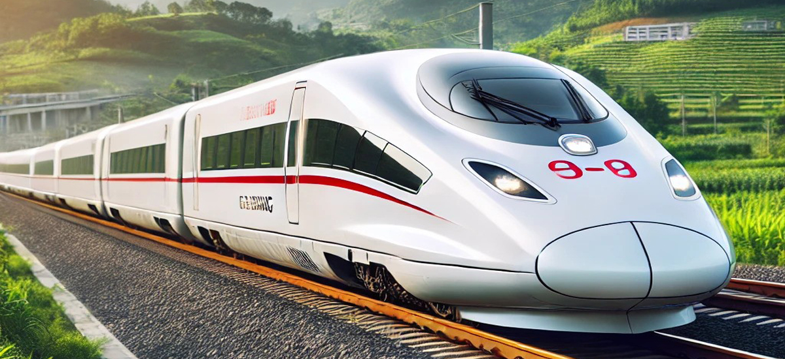

CR Fuxing
Китайската железопътна линия (CR) Fuxing, известна още като серията CR EMU, е серия от високоскоростни влакове. Разработени от Китайската железопътна корпорация, влаковете Fuxing се движат със скорост 350 км/ч, но при тестове са управлявани до 420 км/ч.

Моделите Fuxing са първите изцяло местно произведени високоскоростни модели в Китай,
без никаква патентована или лицензирана технология от външни производители на подвижен състав.
Комплект Fuxing от 8 автомобила
е дълъг 209 м, широк 3,36 м и висок 4,06 м и може да превозва над 500 пътници. Може би най-известни с използването им във високоскоростната железопътна линия Пекин-Шанхай, която превозва пътници между двата града само за 5 часа, комплектите Fuxing се използват и на седем други линии в Китай.
Новата високоскоростна връзка с Тибет
използва модифициран модел Fuxing, предназначен да работи на голяма надморска височина. Fuxing CR400AF ще бъде първият модел, който ще работи в чужбина, с 11 поръчани влакови композиции за високоскоростната железопътна линия Джакарта-Бандунг в Индонезия, която трябва да започне да се движи тази година.
Система
Влаковете CR Fuxing се управляват и поддържат от China Railway Rolling Stock Corporation (CRRC), като са предназначени за най-натоварените високоскоростни линии в Китай. Влаковете работят при интервали от 5 до 10 минути, като предлагат транспортна услуга 18 часа на ден, 7 дни в седмицата. Всеки влак е съставен от 16 секции и може да превози до 1200 пътници, осигурявайки ефективен превоз дори при висока натовареност. CR Fuxing развива нормална работна скорост от 350 км/ч, но по време на тестове е достигал скорости до 420 км/ч. Основните маршрути, които обслужва, включват важни трасета като Пекин-Шанхай и Пекин-Гуанджоу, съкращавайки времето за пътуване между тези градове до приблизително 4.5 часа. Това позволява на пътниците бързо и удобно придвижване между големите икономически центрове на Китай. CR Fuxing влаковете разполагат с иновативни технологии като вградени сензори и системи с изкуствен интелект, които оптимизират комфорта и безопасността на пътниците по време на пътуването. Тези технологии позволяват мониторинг на състоянието на влака и предотвратяване на потенциални проблеми, гарантирайки надеждност и спокойствие за пътниците. CR Fuxing е символ на бързината, безопасността и високотехнологичния напредък на Китай в областта на железопътния транспорт.
Конструкция
Конструкцията на влака CR Fuxing е създадена с цел да осигури максимална скорост, стабилност и комфорт за пътниците. Корпусът на влака е изработен от високоякостни и олекотени материали, които намаляват теглото и същевременно повишават устойчивостта му на вибрации и натоварвания при високи скорости. Аеродинамичният дизайн на предната част на влака минимизира въздушното съпротивление, което не само позволява да се достигне максимална скорост от 350 км/ч в стандартен режим, но и намалява разхода на енергия, което е ключово за екологичната му ефективност. Съществена част от конструкцията на CR Fuxing са модерните електрически и задвижващи системи, които са оптимизирани за работа при екстремни скорости. Намотките на двигателя и преобразувателите на енергия са доставени и интегрирани от водещите китайски производители на електротехническо оборудване, осигуряващи безпроблемна и високоефективна работа. Системите за управление и безопасност са разработени така, че да осигуряват автоматичен контрол върху скоростта и дистанцията между влаковете, като по този начин се минимизират възможностите за инциденти. Вътрешността на влака е проектирана да предлага комфорт и удобства на пътниците. Инженерните екипи са обърнали внимание на вибрациите и шумоизолацията, за да гарантират спокойно пътуване дори при високоскоростни условия. Секциите са оборудвани с удобни седалки и сензорни системи, които поддържат оптимален климат и вентилация, автоматично регулирани според броя на пътниците и външните условия. Всички основни компоненти, включително подрамите, каретите и системите за безопасност, са разработени от CRRC в сътрудничество с водещи китайски научни институти. Влакът CR Fuxing е не само символ на китайския технически напредък в железопътната индустрия, но и на стратегическото партньорство между различни индустриални и научни сектори.
Данни за влака CR Fuxing
- Оператор: CRRC (China Railway Rolling Stock Corporation)
- Работно време: Влаковете обикновено работят на 5-10 минути интервали, 18 часа на ден, 7 дни в седмицата.
- Състав на влака: Всеки влак има 16 секции с капацитет до 1200 пътници
- Скорост: Нормална работна скорост от 350 км/ч, с тествана максимална скорост от 420 км/ч.
- Маршрут: Основните високоскоростни линии на Китай, включително Пекин-Шанхай и Пекин-Гуанджоу.
- Продължителност на пътуването: Пътуване от Пекин до Шанхай трае около 4.5 часа.
- Технология: Вградените сензори и AI технологии оптимизират комфорта и безопасността на пътниците.